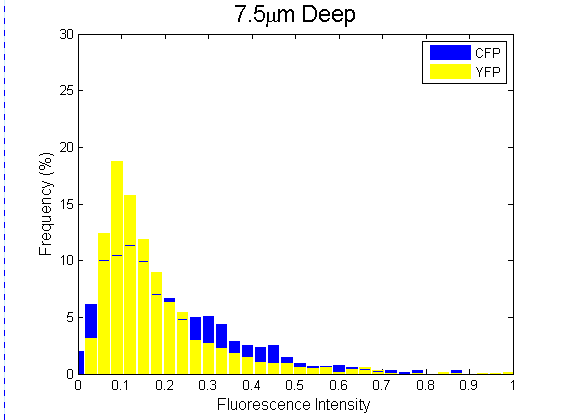
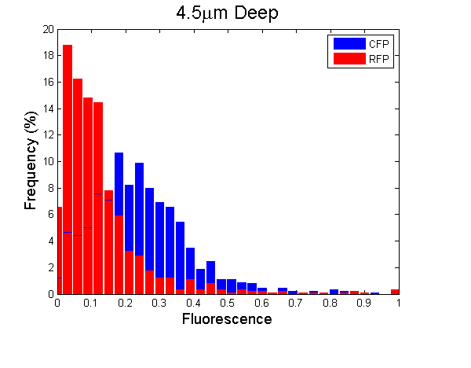
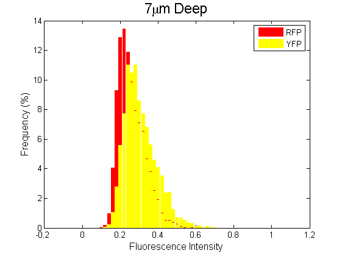

Biofilm
Rainbofilm
Sugarfilm
Parts
Achievements
Tools
Results
We make different plasmid constructions to form biofilm: 1. CFP and YFP+tetR on the same plasmid, 2. CFP and RFP+tetR on the same plasmid, 3. Mixed combination RFP bacteria and YFP bacteria, 4. CFP, YFP+tetR and RFP+tetR on the same plasmid.
Blue and Yellow
When transformed with the plasmid of CFP and YFP+tetR, the biofilm exhibits a three-layer structure in blue-yellow-blue (Fig.1 C). Around the aerobic surface and the anaerobic bottom of the biofilm, the micro-aerobic promoter failed to work. Neither YFP nor tetR is expressed. These lead to the expression of CFP in the surface and the bottom (Fig.1 A). While in the middle of the biofilm, a micro-oxygen condition, YFP and tetR are expressed (Fig.1 B), and latter inhibits the constitutive CFP expression in the middle layer(Fig. 1 A). Fig.1 D shows the fluorescence analysis histogram of different dep
short.png
)
th, indicating a shift from the blue in the surface to the yellow in the middle, but no significant change from the yellow in the middle to the blue in the bottom as showed in the Fig.1 C.

Blue and Red
The biofilm formed with CFP+RFP+tetR plasmid gives more sharp change from blue to red (Fig 2. D 9 um to 10.5 um). The CFP is expressed within the upper part of the biofilm and inhibited in the lower part of the biofilm (Fig. 2 A). Interestingly, the RFP is found both the upper and lower part (Fig2. B), and its intensity reaches the highest point in the 12 um depth (Fig. 2 D 12 um). The permissive expression of the RFP in the upper layer and the overlap of CFP and RFP(Fig 2. C) maybe resulted from 1. the complex microenvironment of the biofilm, 2. the leaking promoter.
long.png)

Yellow and Red
The mixed culture of RFP bacteria and YFP bacteria forms a very blur stratification in their biofilm (Fig 3. C). We can barely see some reddish yellow in the upper edge and some yellowish red in the bottom of the biofilm. And the histogram analysis gives the similar results (Fig. 3 D).

Rainbow
The rainbofilm system, CFP, YFP+tetR and RFP+tetR on the same plasmid, successfully forms a stratified biofilm as we expected. We can clearly see three layers of blue, yellow and red (Fig. 4 D). There is one thing we need to point out that the separation of blue and yellow is not very clear. Only in some area of the biofilm, the distribution of the YFP is deeper than the CFP. And when compared within three colors, the histogram analysis indicates a little differences through the depth of the biofilm (data not shown).